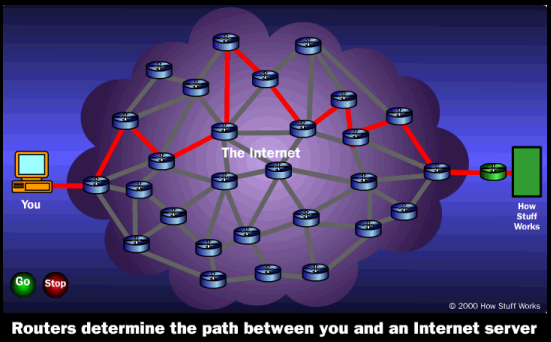
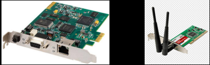
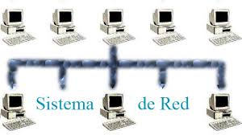
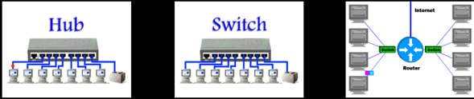

Los ordenadores se conectan entre sí y a Internet mediante cables, ondas de radio y otros tipos de infraestructura de red. Todos los datos que se envían por Internet se traducen en pulsos de luz o electricidad, también conocidos como "bits," que luego interpreta el ordenador receptor.
Si opera una empresa o trabaja en una, no puede hacerlo sin las redes. Necesita una manera rápida de comunicarse con sus clientes, proveedores y empleados. Todavía en 1990, las empresas utilizaban el sistema postal o el telefónico con voz o fax para la comunicación. No obstante, en la actualidad, usted y sus empleados utilizan computadoras y correo electrónico, Internet, teléfonos celulares y computadoras móviles conectadas a redes inalámbricas para este fin. Ahora las redes e internet son casi un sinónimo de hacer negocios.
Gracias a la continua desregularización de las telecomunicaciones y a la innovación en la tecnología de la información, las redes telefónicas y computacionales están convergiendo en una sola red digital que utiliza estándares basados en internet y equipos compartidos. En la actualidad, los proveedores de telecomunicaciones como ATST y Verizon ofrecen servicios de transmisión de datos, acceso a internet, servicio de teléfono celular y programación de televisión, así como servicio de voz. Las compañías de cable, como como Cablevisión y Comcast, ahora ofrecen servicio de voz y acceso a internet. Las redes de computadoras se han expandido ara incluir servicios de teléfono por
Si tuviera que conectar las computadoras de dos o más empleados para que trabajaran juntas en la misma oficina, necesitaría una red de computadoras. ¿Qué es en sí una red? En su forma más simple, una red consiste de dos o más computadoras conectadas entre si. La figura 7-1 ilustra los principales componentes de hardware, software y transmisión que se utilizan en una red simple: una computadora cliente y una computadora servidor dedicada, interfaces de red, un medio de conexión, software de sistema operativo de red, y un concentrador pub o un conmutador switch.
Cada computadora en la red contiene un dispositivo de interfaz de red llamado tarjeta de interfaz de red NIC. La mayoría de las computadoras personales en la actualidad tienen integrada esta tarjeta en la tarjeta madre. El medio de conexión para vincular componentes de red puede ser un cable telefónico, uno coaxial o una señal de radio, en el caso de las redes de teléfonos celulares y de área local inalámbricas.
Un sistema operativo de red (NOS) es un sistema operativo de computadora (OS) que está diseñado principalmente para soportar estaciones de trabajo, computadoras personales y, en algunos casos, terminales antiguos que están conectados en una red de área local (LAN). El software que hay detrás de un NOS permite que varios dispositivos de una red se comuniquen y compartan recursos entre sí. La composición de hardware que suele utilizar un NOS incluye varias computadoras personales, una impresora, un servidor y un servidor de archivos con una red local que los conecta entre sí. La función del NOS es entonces proporcionar servicios y características básicas de red que soporten múltiples solicitudes de entrada simultáneamente en un entorno multiusuario.
La mayoría de las redes también contienen un switch o un hub que actúa como un punto de conexión entre las computadoras. Los Hubs son dispositivos muy simples que conectan componentes de red, para lo cual envían un paquete de datos a todos los demás dispositivos conectados. Un switch tiene mayor funcionalidad que un hub y puede tanto filtrar como reenviar datos a un destino específico en la red. ¿Y que hay si se desea comunicar con otra red, como Internet? Necesitaría un enrutador: un procesador de comunicaciones que se utiliza para enrutar paquetes de datos a través de distintas redes y asegurar que los datos enviados lleguen a la dirección correcta.
